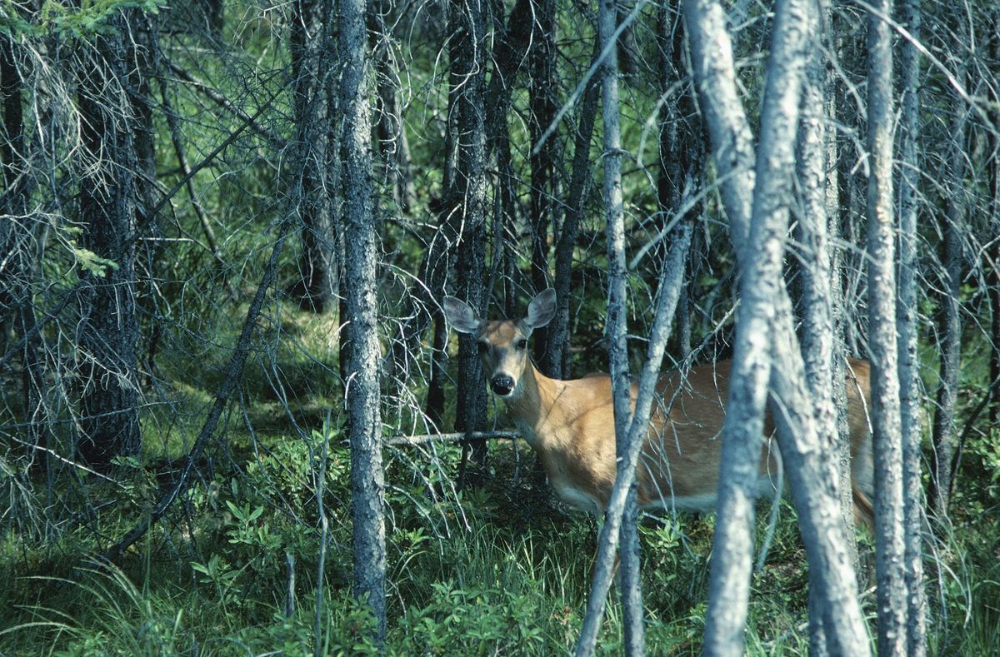
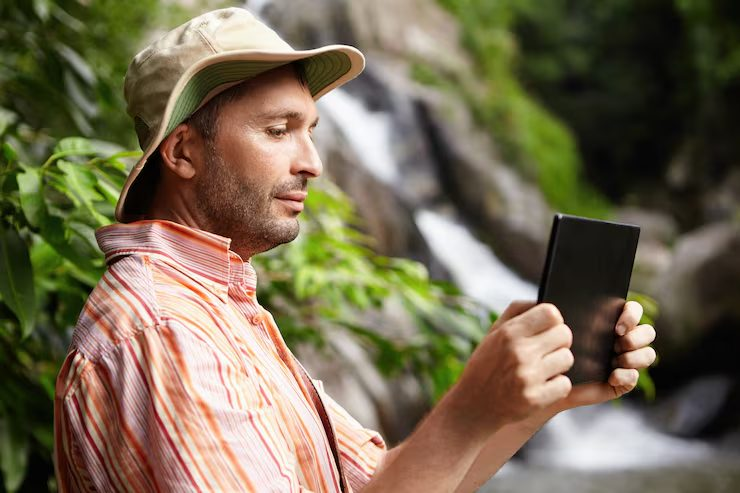
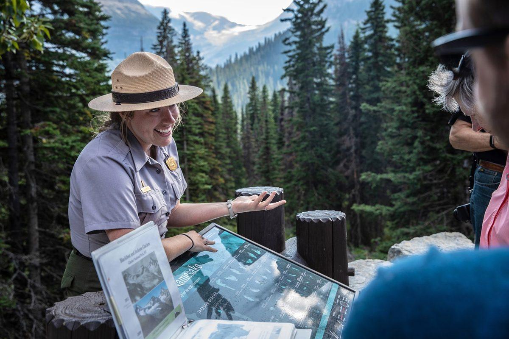
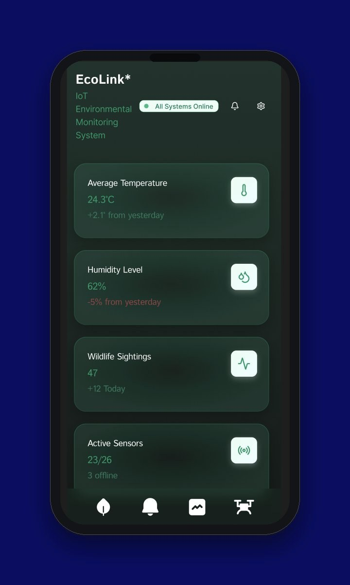
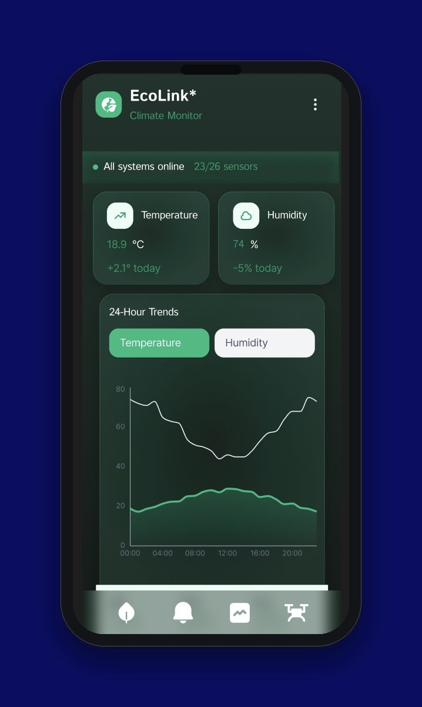
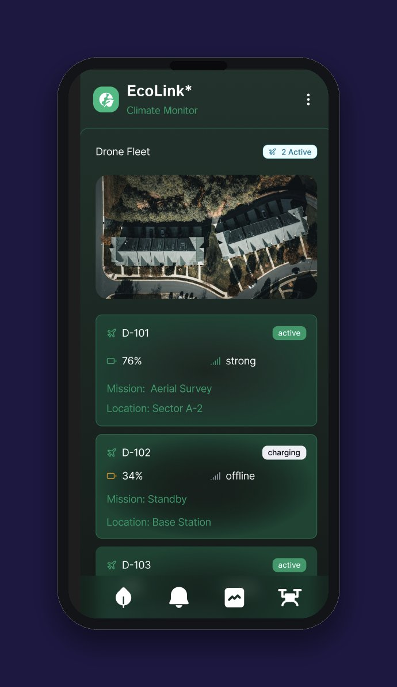

SOLO PROJECT • UX RESEARCH & PRODUCT DESIGN • 2025
EcoLink*
An IoT-based platform connecting real-time climate and wildlife data — built around the mission to empower rangers, researchers, and communities with instant environmental information that drives smarter conservation decisions.

- Role
- UX Researcher & Product Designer
- Team
- Solo project
- Timeline
- 2025
- Methods
- Figma, competitive analysis, user personas
Overview
Problem
Modern wildlife tools collect data, but none of it connects or updates in real time. Camera traps, drones, acoustic sensors, and eDNA kits all operate separately, creating isolated data streams — so researchers and rangers struggle to respond quickly, often missing critical environmental changes as they happen.
Goal
Build a unified environmental platform that brings together climate data, wildlife activity, and human insight in real time — closing the gap between local fieldwork and global analysis through integrated IoT sensors, live overlays, and collaborative reporting tools.
Impact
This was a solo UX research project, not a shipped product, so there's no real usage data yet. [TBD: add outcomes if this gets built or tested.]
Research
Passive sensors like camera traps, drones, acoustic recorders, and eDNA kits gather valuable data, but research shows these systems remain disconnected. Field teams rarely receive real-time updates, creating delays between detection and action that EcoLink* aims to close.
A competitive scan turned up point solutions, but nothing that unified them:
Photo-ID platforms
Identify and track individual animals from crowdsourced photos and scientific records — but aren't real-time; they depend on manual uploads and slow syncing.
GPS wildlife collars
Strong in movement and location data (e.g. OpenCollar), but only track animals — no camera, acoustic, drone, or eDNA integration.
Anti-poaching AI cameras
Smart visual sensors that send alerts from the wild, but focused only on cameras and poaching — not an integrated ecosystem of tools.
Right now, wildlife tools all work separately — data from cameras, sensors, and trackers doesn't update together, and it's hard for people to use.

Process

Mapping who needs what
Plotted every potential user — local volunteers, field researchers, park rangers, NGO data teams, eco-tourists, conservation analysts, and citizen-science app users — across two axes: local vs. global reach, and passive-output-only vs. real backend access. That spread is what pushed EcoLink* toward one flexible system rather than one-size-fits-all screens.

Grounding it in a real scenario
Sarah, a park ranger, opens EcoLink* on her tablet while checking trail conditions. The app overlays live temperature shifts and animal movement on a map of the park; she notices a rise in heat and alerts showing deer migrating toward shaded areas, and reroutes visitors to protect the corridor. This narrative kept the design tied to one real decision-making moment, not just abstract data.
Design Iterations
Built in Figma as one connected dashboard system, split across three core views — environmental monitoring, climate trends, and drone-fleet management — so a ranger or researcher can move between them without losing the shared, real-time picture.



Final Solution
Three connected screens, one shared real-time picture of the ecosystem being monitored.
Live environmental dashboard
Average temperature, humidity, wildlife sightings, and active-sensor status at a glance.
Climate Monitor
24-hour temperature and humidity trends pulled straight from connected sensors.
Drone Fleet
Live status, battery, signal strength, and mission details for every drone in the field.
Results
This was a solo UX research project rather than a shipped product, so there's no real usage data to report yet — these are the metrics we'd want to track if it were built and tested.
Reflection
- Wildlife data is scattered across tools that don't talk to each other — camera traps, drones, acoustic sensors, and eDNA kits all work in isolation, and closing that gap was the real design problem, not any single screen
- Mapping the full spectrum of users, from local volunteers to global NGO data teams, made it clear a single interface had to flex across very different levels of access and expertise
- Grounding the concept in a real scenario — a ranger rerouting visitors after spotting a heat-driven migration pattern — kept the design tied to an actual decision-making moment instead of staying abstract